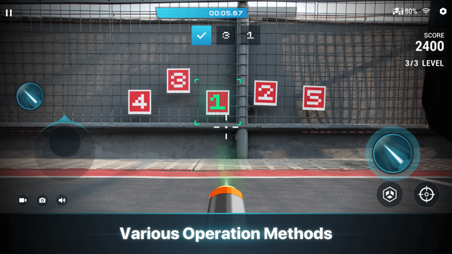

RoboMaster 新手第一课：从拆箱到开上第一台机甲
完全零基础也能上手的 RoboMaster 入门指南，五分钟连好、三个功能先玩透，顺便搞清小白最容易卡壳的几个问题。
这篇能带你从完全不懂到把 RoboMaster 开起来——不需要任何遥控经验，也不用会写代码，跟着点就行。
它到底是干嘛的
一句话：RoboMaster 是大疆做的一台巴掌大的「能开、能打、能编程」的遥控机甲，官网上能看到完整参数和赛事信息。你可以把它类比成——把穿越机的第一人称驾驶视角、麦克纳姆轮遥控车的全向移动、Nerf 发射器的对战玩法，再加一层图形化编程能力，揉成一台能在地上跑的小机甲。
它不只是个玩具。官方赛事里有完整的机甲大师挑战赛，征服模式的据点攻防就是从那里简化下来的家庭玩法。S1 是消费级主力机型，EP 多了可编程扩展口，教育场景里用得更多。
五分钟上手：从拆箱到第一次跑通
整个过程不会超过五分钟，按顺序来：
- 下载应用：手机或平板的应用商店搜 RoboMaster，PC 端从下载拿桌面版。
- 开机配对：按一下机甲顶部的电源键，等灯变蓝；打开应用点「添加机器人」，扫机身二维码——第一次配对用直连模式就行，不用路由器。
- 连上去推摇杆：配对成功后进驾驶界面，左下角虚拟摇杆推一下，底盘就动了——恭喜你，机甲已经跑起来了。

别担心一开始开歪。底盘用的是麦克纳姆轮，能横移、斜走、原地转圈圈，比普通遥控车灵活太多，但新手期建议先低速档熟悉，不然第一次推摇杆很容易让机甲原地打转。
上手后先玩这三个功能
跑起来只是第一步，这三个点是新手最值得先碰的，每个都能立刻感受到这台机甲和普通玩具的差异。
FPV 第一人称驾驶
进驾驶界面后看到的画面就是机甲云台相机拍到的——720p 30fps，直连模式延时大概 80 到 100 毫秒，人体感觉基本同步。你会发现画面转动速度和云台灵敏度挂钩，觉得飘就在设置里调低，觉得迟钝就调高。
第一次进 FPV 别开快，按这个顺序找手感：先原地转云台感受画面，再找块空地直线往返练加减速，最后放两个障碍物绕 8 字横移——麦克纳姆轮的横移是这台机甲和普通遥控车最大的手感差异，绕桩练熟了才能在对战里灵活走位。想深入调云台灵敏度、图传参数这些，翻RoboMaster文档最方便。

切换射击类型
发射器出厂默认红外光束，进「设置 → 控制 → 射击类型」就能切水晶弹模式。两种弹种的判定逻辑完全不同：红外适合室内弱光环境，水晶弹是正式对战用的——泡发好直径 6mm 以上，初速约 26 米每秒，连发射速可控在 1 到 8 发每秒。
阳光底下红外基本没法用，这是物理限制不是机器坏了，别在室外硬撑红外模式。水晶弹模式有个仰角限制：云台俯仰角高于 10° 时不会发射，防止朝天开火弹丸下坠伤人——官方设计上就堵死了高抛弹道，练不出来的。
征服模式打一把
对战界面里选征服模式，把在场的人分成两队，各自布置据点，先占满对方全部据点的一方赢。和乱斗的个人击杀不同，征服的核心是据点——击杀不是目的，占点才是。
技能规则有个细节：同一时间每名选手只能拥有一种技能，必须用完当前技能才能扫描获得下一个，不能连扫替换。这条规则把抢技能从运气变成了战术——什么时候用、什么时候去扫下一个，是征服模式的核心决策点。
小白最容易卡壳的三个问题
为什么室内外手感差这么多
图传距离受环境干扰很大。直连模式下 2.4GHz 标称最远 140 米，路由器 5.8GHz 标称 300 米，但这些都是无干扰环境的数值。墙体遮挡、隔壁 WiFi、微波炉都能让实际距离砍半甚至更多。天线保持竖直图传最稳，觉得画面飘先检查天线方向，别急着调灵敏度。
仰角抬高了为什么打不出弹
这不是 bug，是安全机制。水晶弹模式下云台俯仰角超过 10° 就锁发射，防止朝天开火后弹丸下坠伤到自己或旁人。红外模式同样有仰角限制——这套保护是设计上的硬性逻辑，改不了。
连不上机器人怎么办
先确认机甲开了、灯变蓝了。直连模式下手机会自动切到机器人的 WiFi，别手动连别的热点。如果直连不稳可以切路由器模式，把机甲和手机/PC 拉进同一个局域网，但要注意路由器的 2.4GHz 和 5GHz 不能混——默认用 5.8GHz 图传更稳。
接下来怎么走
能开能打之后，可以试试编程模式。同一个应用里有 Scratch 积木和 Python 两种入口，积木够直观，Python 能精细控制每一个电机和传感器——从图形化到代码的进阶路径官方课程里讲得很清楚。
先把 FPV 绕桩练熟，能稳稳横移绕完两个障碍物不碰墙的时候，你就已经跨过新手门槛了。
整理的这份入门资料在三个代码仓库都能拿到，外网用 GitHub，国内网络想快一点就去 Gitee 或 GitCode 克隆。